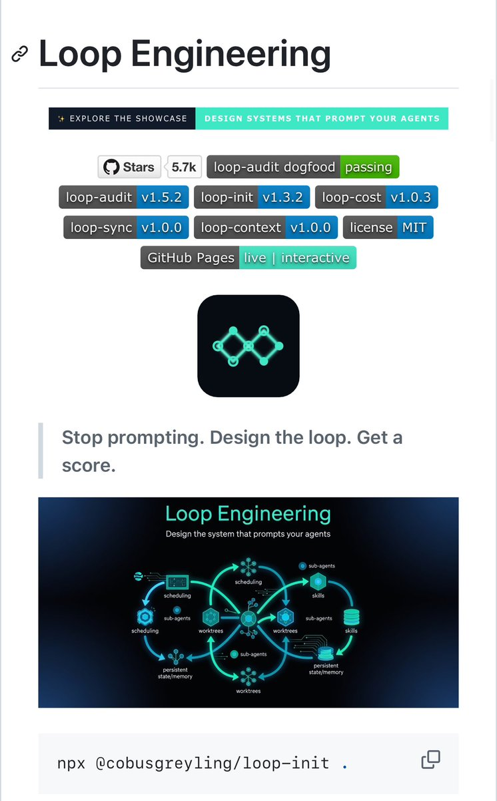

奶昔🥤
@realNyarime
@aronhouyu 所以是雇佣AI来奴役AI干活吗哈哈

Aron厚玉
@aronhouyu
Loop Engineering
现在很多人用 Claude Code、Codex 或者 Cursor 的时候，
还跟聊天机器人一样操作：
先扔个 prompt → 等它回 → 复制出来 → 改改 bug → 再扔新 prompt……循环往复。
这个 repo 直接告诉你：
别再自己一直 prompt 了，
你去设计一个 loop，
让这个 loop 自动去给 agent https://t.co/n4ZjT3M6rQ